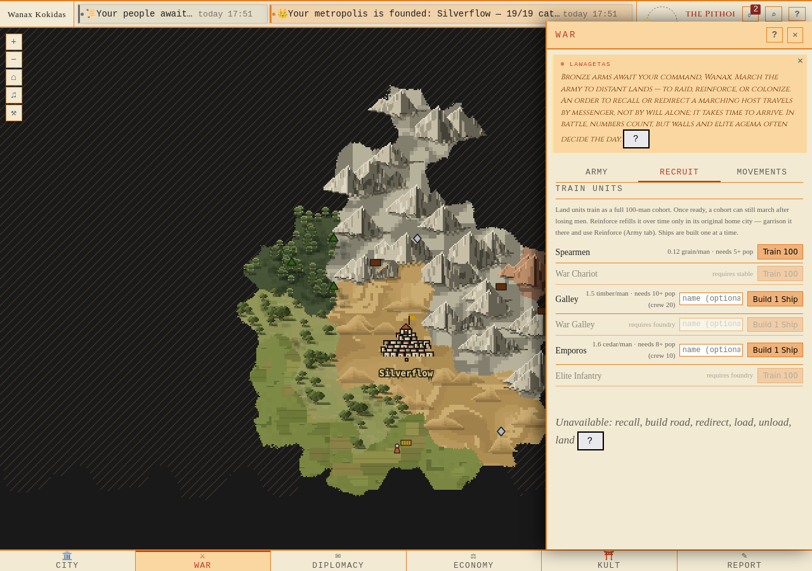
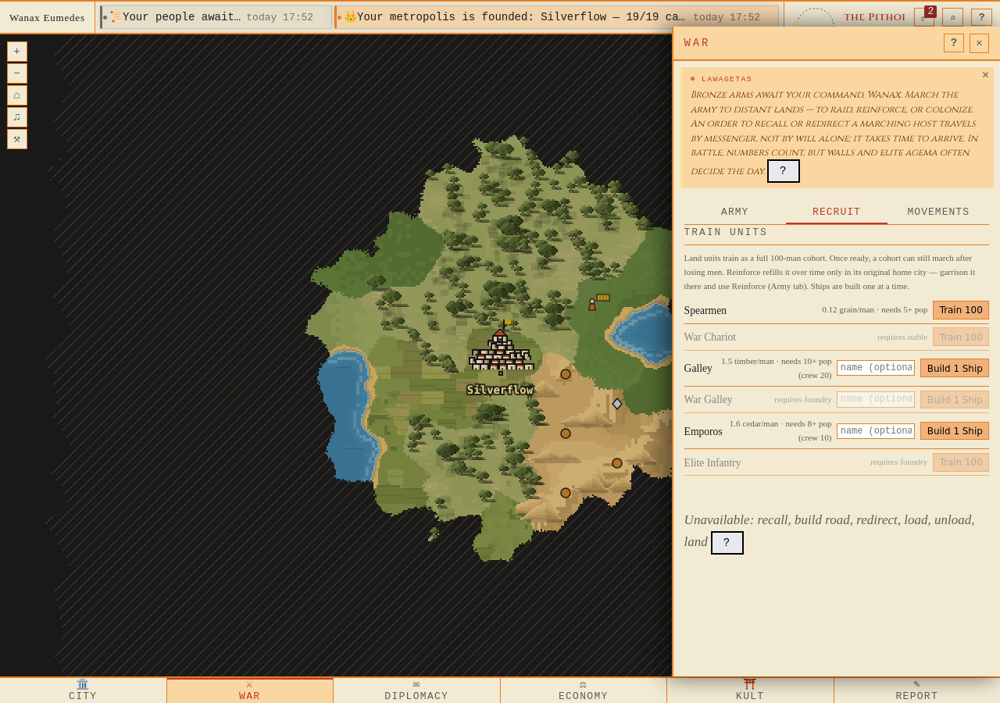
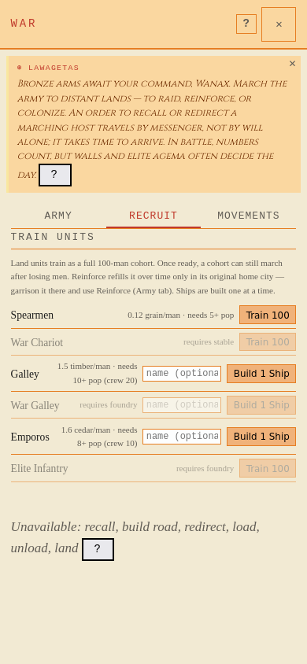

Faktisk Firefox, normal registrering/join/grundning. Därefter uttrycklig lokal rekryteringsfixtur med byggnader och varor men 0 silver. API-katalogens kostnader visas per man i webben, per hel enhet i Keryx.
BevisrapportProvenance förstaProvenance andra


